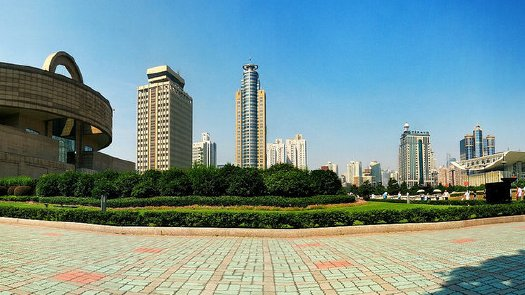

<ion-view view-title="攻略">
	<ion-nav-buttons side="right">
	<button class="button button-clear button-light" ng-click="chat()"><li class="icon ion-ios-chatbubble-outline li-clear"></li></button>
    </ion-nav-buttons>
 <!--  <div class="card nopadding">
 			<div class="item item-image">
 				</div>
 		</div>
 		
 	
 		<div class="tabs select-tab">
 
 			<a href="#/tab/destination/recommend" class="tab-item active">推荐</a>
 			<a href="#/tab/destination/subject" class="tab-item">人气高</a>
 			<a href="#/tab/destination/subject" class="tab-item">亲子游</a>
 			<a href="#/tab/destination/subject" class="tab-item">美食游</a>
 
 		</div>
 		
 		<ion-nav-view name="destination-select-tab"></ion-nav-view> -->
</ion-view>